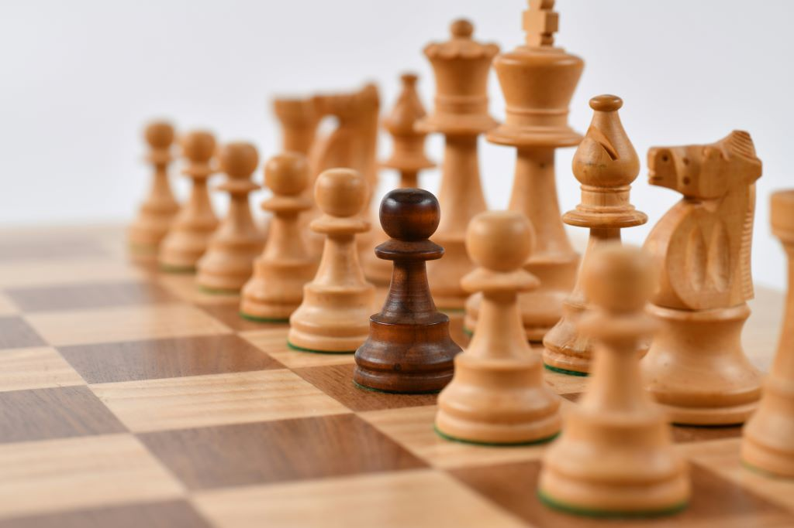

Bordspellen

Schaakbord met enkele schaakstukken
Hiernaast staat een lijst van een aantal bordspellen.
| Naam | Leeftijd (van tot) | Aantal spelers (min max) | ||||
|---|---|---|---|---|---|---|
| Monopoly | 8 | - | 99 | 2 | - | 6 |
| 30 seconds | 12 | - | 99 | 3 | - | 20 |
| De kolonisten van Catan | 10 | - | 99 | 3 | - | 4 |
| Levensweg | 6 | - | 99 | 2 | - | 4 |
| Rummikub | 6 | - | 99 | 2 | - | 4 |
| Stratego | 8 | - | 99 | 2 | - | 2 |
| Risk | 100 | - | 99 | 2 | - | 5 |
| Mens erger je niet! | 6 | - | 99 | 2 | - | 6 |